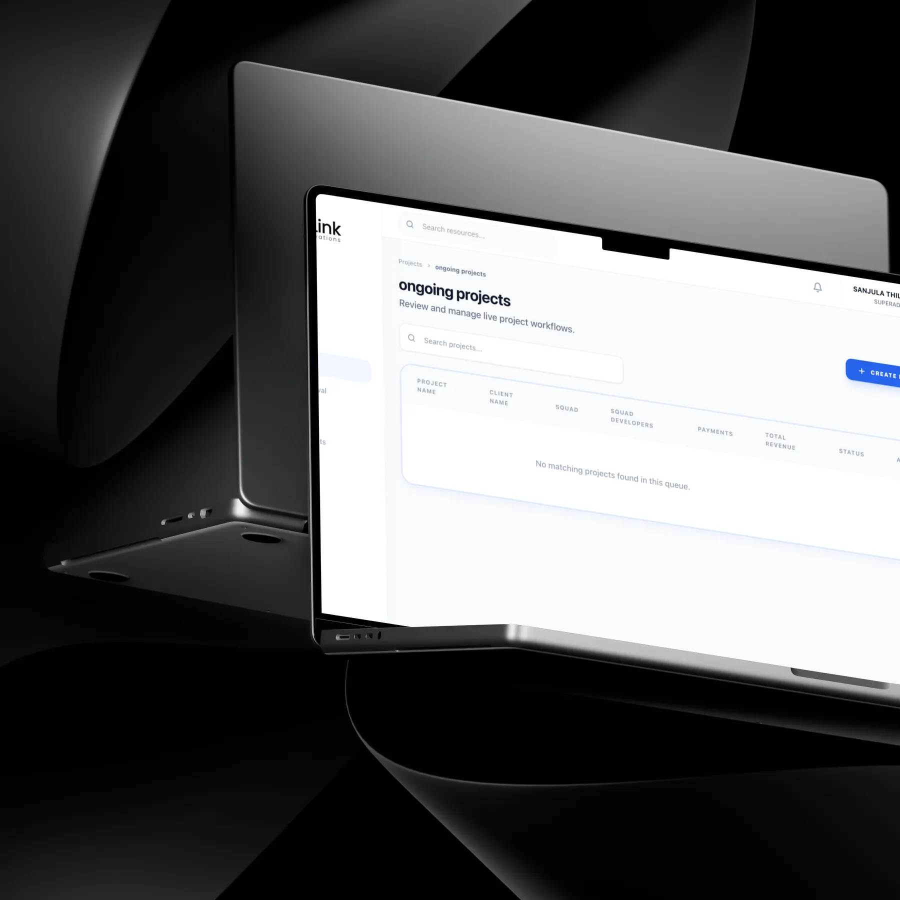
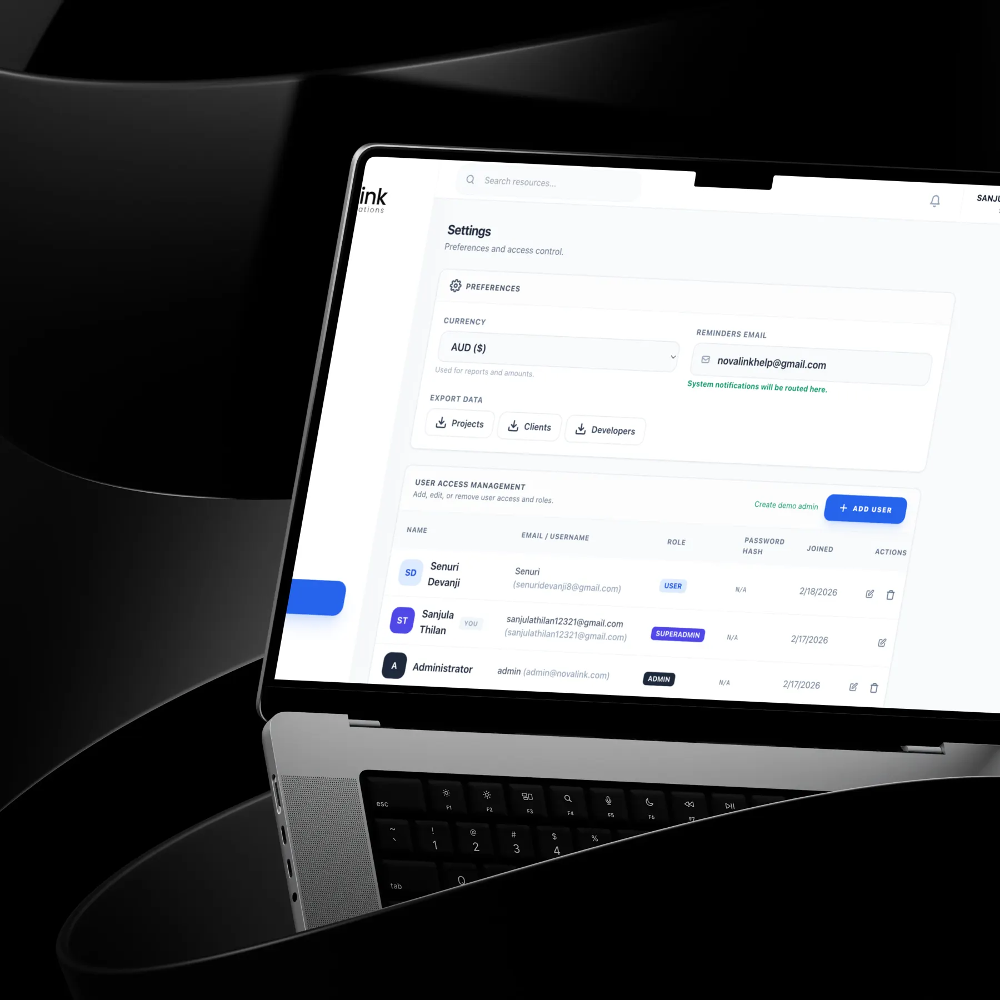

NovaLink.
A focused project tool for a small team. From Figma to React, with AI doing the planning work nobody enjoys.

The problem
The team tracked projects across scattered tools. Updates were missed and planning took hours of manual work.
The solution
A single-page app with dashboards, task tracking, AI-suggested priorities and schedules, and automatic email alerts for assignments and deadlines.
The impact
Hours saved
The team reported that the AI integration saved hours of manual planning.
I owned it end to end: workflow mapping, UI/UX, the component system, the front-end build in React 18, TypeScript, Vite and Tailwind CSS, and the AI planning integration.
Prioritise the handful of actions people repeat every day, and keep everything else one click away.
Ongoing projects, project settings, team management, task creation, dashboards, AI planning and email notifications.
The decisions behind the experience
See the interface. Follow the decision.

Dashboards answer “what needs me now?”
Priority tasks and deadlines first.
Read the decision
Components designed with their states
One library from Figma to React.
Read the decisionResearch, exploration, and what I learned↓
A small team running many projects, and nobody sure what changed today.
NovaLink needed one system to manage internal projects and keep every team member informed in real time. It also had to help plan ahead, not only record what had happened.
Project tools fail when they feel heavier than the work. If updating the system took longer than sending a message, the team would stop using it.
- A fast, responsive single-page app
- AI-based task prioritisation and scheduling
- Automatic email alerts for updates and deadlines
- Dashboards showing progress at a glance
- Consistency across many modules
The temptation was to copy a full-featured tool. The useful answer was a focused one.
I mapped our own workflows against modern project management tools. Most of what big tools offer was never used by a small team.
So the core stayed small: create a task, track a project, act on a notification. AI took on the planning work people disliked doing.
Suggestions, not decisions
AI suggestions can feel like the system is deciding for you. They stay as suggestions the team can edit.
Make the frequent things fast, and let AI carry the tedious ones.
What shaped the interface.
Dashboards answer “what needs me now?”
High-priority tasks, timelines and upcoming deadlines appear first.
Email where people already are
Assignment, deadline and update emails remove the need to keep checking the app.
A modular component library
Shared React components kept every module consistent and made new features faster to ship.
From requirements to a working model.
Less time planning. More time delivering.
The internal product manager reported that the AI integration had already saved the team hours of manual planning.
Figures describe the scope of the design work. Measured results will be added as they become available.
They took the time to understand our complex project management requirements and translated them into a highly efficient and visually stunning system. The AI integration has already saved our team hours of manual planning.
NovaLink Innovations
Building my own design in React showed me which details matter in code. I now design components with their states and edge cases already defined.